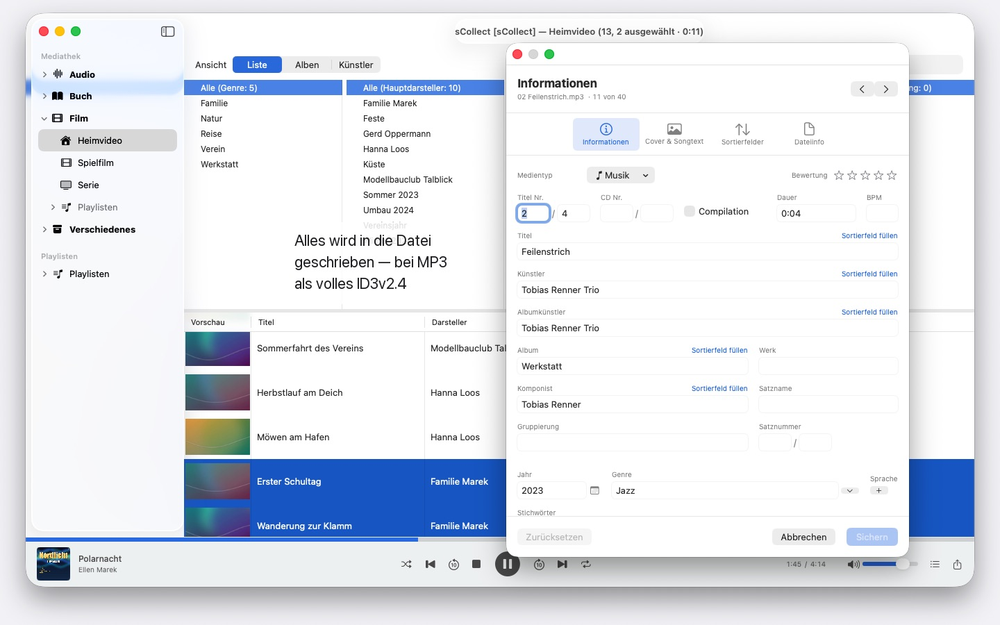
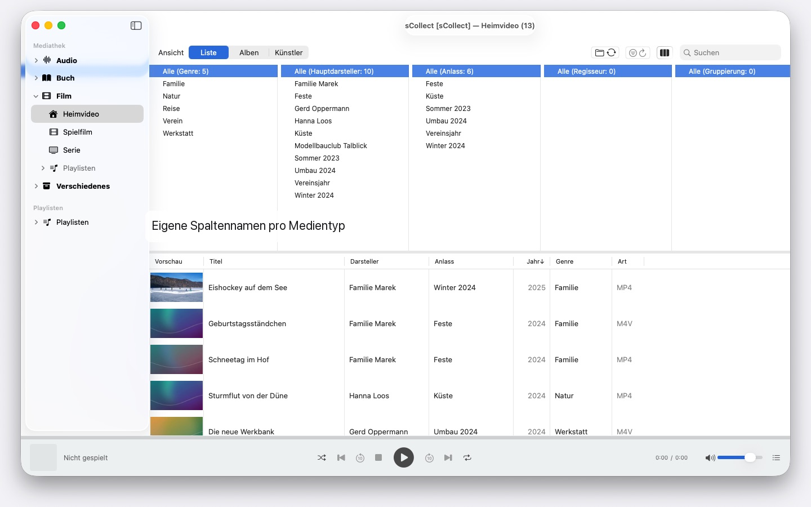

Tausende Interpreten, mehrere Macs, jedes macOS ab 14: sCollect ordnet Musik, Filme und Bücher und schreibt deine Angaben in die Dateien selbst. Ohne Konto, ohne Cloud.


sCollect ist eine Mediathek für alles, was sich sammeln lässt: Musik, Filme, Heimvideos, Hörbücher, Podcasts und E-Books — und für Dinge, die gar keine Mediendateien sind, etwa Münzen oder Briefmarken, fotografiert und beschrieben. Wie die Kategorien heißen, bestimmst du selbst.
Der Unterschied zu einem gewöhnlichen Katalog: sCollect schreibt zurück. Was du im Editor eingibst, landet nicht nur in der Datenbank, sondern in den Metadaten der Datei selbst. Deine Arbeit bleibt damit auch dann erhalten, wenn du sCollect eines Tages nicht mehr benutzt.
ORDNUNG, DIE SICH VON SELBST EINSTELLT
Beim Import legt sCollect jede Datei an ihren Platz — nach Medientyp, Künstler, Album oder Datum, je nachdem, wie du es eingestellt hast. Jeder Medientyp darf dabei seinen eigenen Ordner haben, auch auf einer anderen Festplatte: Filme auf der großen externen Platte, Musik auf der schnellen internen.
Wer seine Sammlung lieber dort lässt, wo sie ist, verknüpft sie stattdessen. Verknüpfte Dateien werden nie angefasst.
FÜR FOTOS UND FILMAUFNAHMEN
Wer fotografiert oder filmt, legt einen Medientyp nach Datum ab: Beim Import landen die Dateien in Jahres- und Monatsordnern, und der Dateiname trägt den Aufnahmezeitpunkt, gelesen aus der Datei selbst — bei Filmen mit Hinweis, wenn die Kamera die Zeitzone verschweigt. Kamerakürzel wie IMG_ verschwinden auf Wunsch aus dem Titel, ein ISO-Datum kommt hinzu, und Liste und Festplatte sortieren gleich.
METADATEN, DIE IN DER DATEI ANKOMMEN
Ein Editor für einzelne Objekte, ein zweiter für viele auf einmal. Beide schreiben in das Format, das die Datei mitbringt — ID3v2.4 bei MP3, die Tag-Struktur von MP4 und M4A, Vorbis-Kommentare bei FLAC und OGG, die Textblöcke von AIFF und WAV, DSF bei DSD-Aufnahmen, EXIF, IPTC und XMP bei Bildern.
Wo ein Format kein Feld für etwas hat oder eine Datei kopiergeschützt ist, legt sCollect eine Begleitdatei daneben, statt die Angabe zu verlieren. Weicht die Datei von der Mediathek ab, sagt es der Editor, bevor du etwas überschreibst.
WAS DIE ARBEIT ABKÜRZT
- Suchen und Ersetzen über alle Felder
- Duplikate finden, über die ganze Kategorie, mit einem nachvollziehbaren Urteil darüber, welche Fassung die bessere ist
- Ein Spaltenbrowser wie in einer Musikverwaltung, mit Mehrfachauswahl je Spalte. Tausende Interpreten ohne endloses Scrollen: gruppiert nach Anfangsbuchstaben, A, AB, ABB – drei Klicks bis zum Ziel
- Wiedergabe für Ton und Bild, mit Playlisten und gemerkter Abspielposition
FEHLENDE DATEIEN FINDEN, STATT SIE ZU SUCHEN
Ein Durchlauf markiert jeden Eintrag, dessen Datei nicht mehr da ist, und merkt sich das Ergebnis. Eine eigene Ansicht zeigt nur diese Einträge und hakt ab, was du wieder verknüpft hast.
MEHRERE RECHNER, EINE SAMMLUNG
Eine Mediathek kann Kopien anmelden. Was du am Hauptbestand änderst, wandert nachträglich in jede erreichbare Kopie, Dateien und Tags eingeschlossen. Ist eine Kopie gerade offline, bleibt die Änderung liegen und wird nachgeholt, sobald sie wieder da ist.
Welches macOS dort jeweils läuft, ist gleich: Ein Mac mit macOS 14 und einer mit macOS 26 lesen dieselbe Sammlung, kein Systemupdate stellt sie um. Die Kopien sind aber keine Sicherung.
IMPORT UND EXPORT
Bestehende Sammlungen kommen über die iTunes-XML herein, samt Bewertungen und Playlisten. Heraus geht es als sCollect-XML — verlustfrei, für Umzug und Sicherung —, als Playlist für Apple Music oder als iTunes-XML.
AUF DEINEM MAC, UND NUR DORT
Keine Konten, keine Cloud, keine Analyse, keine Werbung. sCollect arbeitet ausschließlich mit den Ordnern, die du ihm gibst.
Deshalb liest sCollect auch keine CDs ein und holt keine Titelangaben aus dem Internet — beides kann Apple Music schon. Lies die CD dort als AAC, Apple Lossless oder MP3 ein, dann bringen die Dateien ihre Titelangaben nach sCollect mit. Was du sammelst und wie du es ordnest, erfährt so kein Dienst.
In 24 frei wählbaren Sprachen, jede mit vollständiger Hilfe.
- Erfordert macOS 14 oder neuer
- 24 Sprachen
- Support: SwiftAppsBavaria@gmx.net
Weitere Apps
sVectorLift
Alte Vektor-Clipart öffnen, ansehen und als SVG sichern — CorelDRAW, Windows Metafile und CGM.
SwiftRename
Von der Speicherkarte ins Archiv: Fotos und Videos nach Aufnahmezeit benennen, nach Jahr, Monat oder Tag ablegen, Duplikate erkennen — auch bei RAW.
sName2Date
Das Datum aus dem Dateinamen als Aufnahmedatum in Fotos, Filme und Tonaufnahmen schreiben — damit sich eine Datei wie IMG_20240115_103000.jpg in jeder Fotoverwaltung richtig einsortiert. Die Bild- und Filmdaten bleiben unangetastet; PDFs und andere Dateien ohne Aufnahmedatum bekommen das Datei-Datum, und auf Wunsch kommt auch der Name in die ISO-Schreibweise. Ganze Ordnerbäume auf einmal, und jeder Durchgang lässt sich mit ⌘Z zurücknehmen.
sName2Date Lite
Die Ausgabe für eine Datei je Durchgang: das Datum aus dem Dateinamen als Aufnahmedatum in ein Foto, einen Film oder eine Tonaufnahme schreiben, von Hand setzen, den Namen in die ISO-Schreibweise bringen und alles mit ⌘Z zurücknehmen — dieselben Fähigkeiten wie sName2Date, nur ohne ganze Ordner.
sCollectPlay
Der Player zur Mediathek: Musik, Filme, Hörbücher und Podcasts einfach aus einem Ordner, aus einer iTunes-XML oder aus einer sCollect-Mediathek abspielen — an den Tags der Dateien ändert sich dabei nichts. Mit Wiedergabelisten, Ton- und Untertitelspuren, bei Filmen mit Zeitlupe und Einzelbildschritt. Was macOS nicht selbst abspielt, etwa MKV, AVI oder DSD, geht an einen externen Player.
sCollectPlay Lite
Die schlanke Ausgabe von sCollectPlay: einfach einen Ordner, eine iTunes-XML oder eine sCollect-Mediathek öffnen und daraus Musik, Filme, Hörbücher und Podcasts abspielen — mit Wiedergabelisten, Ton- und Untertitelspuren, Zeitlupe und Einzelbildschritt. Eine Quelle je Sitzung; Spaltenbrowser, eigene Wiedergabelisten und zuletzt benutzte Quellen bleiben der Vollversion vorbehalten.
sBikeBridge
Radtouren auswerten, ohne sie in ein Portal hochzuladen: FIT-Dateien jedes Radcomputers einlesen, der in diesem Format aufzeichnet, dazu GPX und TCX. Die Touren liegen in einer eigenen Bibliothek auf dem Mac — mit Karte, Leistung und Herzfrequenz, Fotos und Notizen; Dubletten erkennt der Import. Kennzahlen je Jahr oder Monat und Filter nach Strecke, Höhenmetern und Dauer machen Touren vergleichbar. Die Karte gibt es auf Wunsch auch offline.